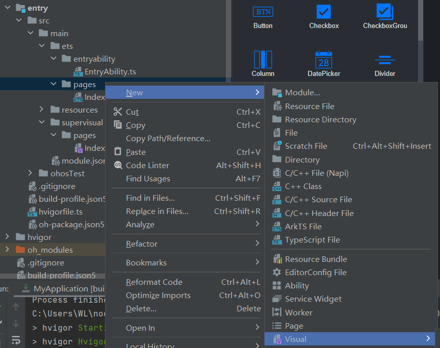

低代码开发具有丰富的 UI 界面编辑功能，遵循 HarmonyOS eTS 开发规范，通过可视化界面开发方式快速构建布局，可有效降低用户的时间成本，提升用户构建 UI 界面的效率；
新建项目，并选择 Empty Ability，打开低代码模式的开关：
其中，visual 文件是低代码提供的，位于 supervisual 目录下，与 ets 目录下的 ets 文件相对应；
不过，处于低代码模式下，不需要在 ets 文件的 build 方法中编写代码，只需要设计 visual 文件；
状态变量、事件方法需要在 ets 文件中声明；
新建页面：
media query 的功能一般用于开发者根据设备的大致类型或特定的特征和设备参数，例如屏幕分辨率、横竖屏，来修正应用的样式，显示相应情况下的应用样式；
原子化服务
原子化服务是 HarmonyOS 提供的一种全新的应用形态，具有独立入口，用户可通过点击、碰一碰、扫一扫等方式直接触发，无需显式安装，由程序框架后台静默安装后即可使用，可为用户提供便捷服务；
原子化服务基于鸿蒙系统 API 开发，支持运行在 1+8+N 设备上，供用户在合适的场景、合适的设备上便捷使用；
原子化服务是支撑可分可合，自由流转的轻量化程序实体，帮助开发者的服务更快触达用户；具备以下特点：
- 触手可及：在服务中心发现并使用；
- 服务直达：无需安装卸载，秒开体验；
- 服务卡片：支持用户无需打开原子化服务，便可以获取到服务中重要信息的展示和动态变化；
- 自由流转：支持运行在多设备上，可以按需跨端迁移，多设备协同；
开发总体要求：
- 免安装的 HAP 包不能超过 10MB；
- Project Type 字段选择 “Atomic Service”；
- 保持免安装属性；
- HAP 包必须包含 FA；
设计图如下：
总的来看，手机和平板的设计都是由三部分组成，第一部分是文本，第二部分是图片加文本，第三部分是文本加列表；
其中，针对 UI 效果在手机和平板上的差异，需要使用 media query 功能；
服务卡片
服务卡片是 FA 的一种界面展示形式，将 FA 的重要信息或操作前置到卡片，以达到服务直达，减少体验层级的目的；
卡片常用于嵌入到其他应用（当前只支持系统应用）中作为其界面的一部分显示，并支持拉起页面，发送消息等基础的交互功能；
创建低代码的服务卡片页面：